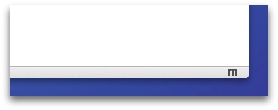
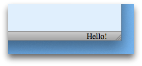
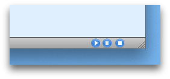
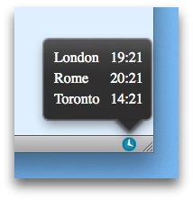

Deprecated in Firefox 29 and removed in Firefox 38.
The widget API is deprecated from Firefox 29 onwards. Please see the ui module for replacements. In particular, for a simple button, try the action button or toggle button APIs, and for a more complex widget try the toolbar or sidebar APIs.
Create a simple user interface for an add-on in Firefox's add-on bar.
Usage
"Widgets" are small pieces of content that live in the Firefox 4 add-on bar. They can be simple icons or complex web pages. You can attach panels to them that open when they're clicked, or you can define a custom click handler to perform some other action, like opening a web page in a tab.
There are a few advantages to using widgets over an ad hoc user interface. First, your users will be accustomed to interacting with add-ons via widgets and the add-on bar. Second, it allows Firefox to treat your interface as a first-class citizen. For example, in the future Firefox may allow the user to drag widgets from the add-on bar to other toolbars. By exposing your interface as a widget, your add-on would automatically inherit such functionality.
Creation and content
Widgets can contain images or arbitrary web content. You can include this content inline as a string by using the content property, or point to content using a URL with the contentURL property.
Upon creation, the widget is automatically added to the add-on bar. You can set the width of a widget, but the height is fixed so as to fit in the add-on bar. If the content is an image, it is automatically scaled to be 16x16 pixels.
For example, this widget contains an image, so it looks like a simple icon:
require("sdk/widget").Widget({
id: "mozilla-icon",
label: "My Mozilla Widget",
contentURL: "http://www.mozilla.org/favicon.ico"
});
You can make contentURL point to an HTML or icon file which you have packaged inside your add-on. Just save the file in your add-on's data directory, and reference it using the data.url() method of the self module:
var data = require("sdk/self").data;
require("sdk/widget").Widget({
id: "my-widget",
label: "My Widget",
contentURL: data.url("my-content.html")
});
This widget contains an entire web page:
require("sdk/widget").Widget({
id: "hello-display",
label: "My Hello Widget",
content: "Hello!",
width: 50
});
Widgets are quite small by default, so this example used the width property to grow it in order to show all the text.
Scripting widget content
To interact with the widget's content you need to load a separate script into the panel. In the SDK these scripts are called "content scripts" because they're explicitly used for interacting with web content.
While content scripts can access the content they're attached to, they can't use the SDK's APIs. So implementing a complete solution usually means you have to send messages between the content script and the main add-on code.
-
You can specify one or more content scripts to load into the widget using the
contentScriptorcontentScriptFileoptions to theWidget()constructor. -
You can communicate with the script using either the
postMessage()API or (preferably, usually) theportAPI.
Unless your content script is extremely simple and consists only of a static string, don't use contentScript: if you do, you may have problems getting your add-on approved on AMO.
Instead, keep the script in a separate file and load it using contentScriptFile. This makes your code easier to maintain, secure, debug and review.
For example, suppose we want to implement a media player as an add-on. We could implement the main user interface as a widget hosting an array of buttons to control play/pause/stop functions.
We can then use a content script to listen for clicks on those buttons. But because content scripts can't use the SDK's APIs, we'll want the content script to send messages to the main add-on code, which can then implement the media player functions using the SDK.
The widget's content is specified using HTML like this:
<html>
<body>
<img src="play.png" id="play-button">
<img src="pause.png" id="pause-button">
<img src="stop.png" id="stop-button">
</body>
</html>We just include three icons, and assign an ID to each one. This HTML file, and the icon files it references, are saved in the add-on's data directory.
Next, we write a content script that listens for click events on each icon and sends the corresponding message to the main add-on code:
var play_button = document.getElementById("play-button");
play_button.onclick = function() {
self.port.emit("play");
}
var pause_button = document.getElementById("pause-button");
pause_button.onclick = function() {
self.port.emit("pause");
}
var stop_button = document.getElementById("stop-button");
stop_button.onclick = function() {
self.port.emit("stop");
}
We save this file in the add-on's data directory as "button-script.js". Finally. in the add-on's "main.js" file, we create the widget, assign it the HTML file and the content script, and listen for events from the content script:
const widgets = require("sdk/widget");
const data = require("sdk/self").data;
var player = widgets.Widget({
id: "player",
width: 72,
label: "Player",
contentURL: data.url("buttons.html"),
contentScriptFile: data.url("button-script.js")
});
player.port.on("play", function() {
console.log("playing");
});
player.port.on("pause", function() {
console.log("pausing");
});
player.port.on("stop", function() {
console.log("stopping");
});
To learn much more about content scripts, see the Working with Content Scripts guide.
Scripting trusted widget content
We've already seen that you can package HTML files in your add-on's data directory and use them to define the widget's content. We can call this "trusted" content, because unlike content loaded from a source outside the add-on, the add-on author knows exactly what it's doing. To interact with trusted content you don't need to use content scripts: you can just include a script from the HTML file in the normal way, using script tags.
Like a content script, these scripts can communicate with the add-on code using the postMessage() API or the port API. The crucial difference is that these scripts access the postMessage and port objects through the addon object, whereas content scripts access them through the self object.
To show the difference, convert the player add-on above to use normal page scripts instead of content scripts.
First, in the content script, change self to addon, and wrap it in a function:
function init() {
var play_button = document.getElementById("play-button");
play_button.onclick = function() {
addon.port.emit("play");
}
var pause_button = document.getElementById("pause-button");
pause_button.onclick = function() {
addon.port.emit("pause");
}
var stop_button = document.getElementById("stop-button");
stop_button.onclick = function() {
addon.port.emit("stop");
}
}
Next, add a script tag to reference "button-script.js", and call its init() function on load:
<html>
<head>
<script src="button-script.js"></script>
</head>
<body onLoad="init()">
<img src="play.png" id="play-button">
<img src="pause.png" id="pause-button">
<img src="stop.png" id="stop-button">
</body>
</html>
Finally, remove the line attaching the content script from "main.js":
const widgets = require("sdk/widget");
const data = require("sdk/self").data;
var player = widgets.Widget({
id: "player",
width: 72,
label: "Player",
contentURL: data.url("buttons.html")
});
player.port.emit("init");
player.port.on("play", function() {
console.log("playing");
});
player.port.on("pause", function() {
console.log("pausing");
});
player.port.on("stop", function() {
console.log("stopping");
});
Attaching panels to widgets
You can supply a panel to the widget's constructor: if you do this, the panel is automatically displayed when the user clicks the widget.

data = require("sdk/self").data
var clockPanel = require("sdk/panel").Panel({
width:215,
height:160,
contentURL: data.url("clock.html")
});
require("sdk/widget").Widget({
id: "open-clock-btn",
label: "Clock",
contentURL: data.url("History.png"),
panel: clockPanel
});
Note that this is, at the moment, the only way you can attach a panel to a widget.
You must supply the panel in the widget's constructor for it to work. If you assign the panel to the widget after construction, the panel can still be shown but will not be anchored to the widget:
data = require("sdk/self").data
var clockPanel = require("sdk/panel").Panel({
width:215,
height:160,
contentURL: data.url("clock.html")
});
widget = require("sdk/widget").Widget({
id: "open-clock-btn",
label: "Clock",
contentURL: data.url("History.png")
});
widget.panel = clockPanel;
// Will not be anchored
widget.panel.show();
Also, if you try to call panel.show() inside your widget's click event listener, the panel will not be anchored:
data = require("sdk/self").data
var clockPanel = require("sdk/panel").Panel({
width:215,
height:160,
contentURL: data.url("clock.html")
});
require("sdk/widget").Widget({
id: "open-clock-btn",
label: "Clock",
contentURL: data.url("History.png"),
panel: clockPanel,
onClick: function() {
// Will not be anchored
this.panel.show();
}
});
See bug 638142.
Private windows
If your add-on has not opted into private browsing, then your widget will not appear in any private browser windows.
To learn more about private windows, how to opt into private browsing, and how to support private browsing, refer to the documentation for the private-browsing module.
Examples
For conciseness, these examples create their content scripts as strings and use the contentScript property. In your own add-ons, you will probably want to create your content scripts in separate files and pass their URLs using the contentScriptFile property. See Working with Content Scripts for more information.
var widgets = require("sdk/widget");
// A basic click-able image widget.
widgets.Widget({
id: "google-link",
label: "Widget with an image and a click handler",
contentURL: "http://www.google.com/favicon.ico",
onClick: function() {
require("sdk/tabs").activeTab.url = "http://www.google.com/";
}
});
// A widget that changes display on mouseover.
widgets.Widget({
id: "mouseover-effect",
label: "Widget with changing image on mouseover",
contentURL: "http://www.yahoo.com/favicon.ico",
onMouseover: function() {
this.contentURL = "http://www.bing.com/favicon.ico";
},
onMouseout: function() {
this.contentURL = "http://www.yahoo.com/favicon.ico";
}
});
// A widget that updates content on a timer.
widgets.Widget({
id: "auto-update-widget",
label: "Widget that updates content on a timer",
content: "0",
contentScript: 'setTimeout(function() {' +
' document.body.innerHTML++;' +
'}, 2000)',
contentScriptWhen: "ready"
});
// A widget created with a specified width, that grows.
var myWidget = widgets.Widget({
id: "widget-effect",
label: "Wide widget that grows wider on a timer",
content: "I'm getting longer.",
width: 50,
});
require("sdk/timers").setInterval(function() {
myWidget.width += 10;
}, 1000);
// A widget communicating bi-directionally with a content script.
var widget = widgets.Widget({
id: "message-test",
label: "Bi-directional communication!",
content: "<foo>bar</foo>",
contentScriptWhen: "ready",
contentScript: 'self.on("message", function(message) {' +
' alert("Got message: " + message);' +
'});' +
'self.postMessage("ready");',
onMessage: function(message) {
if (message == "ready")
widget.postMessage("me too");
}
});
Globals
Constructors
Widget(options)
Creates a new widget. The widget is immediately added to the add-on bar.
Parameters
options : object
Required options:
| Name | Type | |
|---|---|---|
| label | string |
A string description of the widget used for accessibility, title bars, and error reporting. |
| id | string |
A string used to identify your widget in order to save its location when the user moves it in the browser. This string has to be unique and must not be changed over time. |
Optional options:
| Name | Type | |
|---|---|---|
| content | string |
An optional string value containing the displayed content of the widget. It may contain HTML. Widgets must have either the If the content is an image, it is automatically scaled to be 16x16 pixels. |
| contentURL | string |
An optional string URL to content to load into the widget. This can be local content or remote content, an image or web content. Widgets must have either the If the content is an image, it is automatically scaled to be 16x16 pixels. |
| panel | Panel |
An optional panel to open when the user clicks on the widget. Note: If you also register a "click" listener, it will be called instead of the panel being opened. However, you can show the panel from the listener by calling |
| width | integer |
Optional width in pixels of the widget. If not given, a default width is used. |
| onClick | function |
Include this to listen to the widget's |
| onMessage | function |
Include this to listen to the widget's |
| onMouseover | function |
Include this to listen to the widget's |
| onMouseout | function |
Include this to listen to the widget's |
| onAttach | function |
Include this to listen to the widget's |
| tooltip | string |
Optional text to show when the user's mouse hovers over the widget. If not given, the |
| allow | object |
An optional object describing permissions for the content. It should contain a single key named |
| contentScriptFile | string,array |
A local file URL or an array of local file URLs of content scripts to load. Content scripts specified by this property are loaded before those specified by the |
| contentScript | string,array |
A string or an array of strings containing the texts of content scripts to load. Content scripts specified by this property are loaded after those specified by the |
| contentScriptWhen | string |
When to load the content scripts. This may take one of the following values:
This property is optional and defaults to "end". |
| contentScriptOptions | object |
Read-only value exposed to content scripts under Any kind of jsonable value (object, array, string, etc.) can be used here. Optional. |
Widget
Represents a widget object.
Methods
destroy()
Removes the widget from the add-on bar.
postMessage(data)
Sends a message to the widget's content scripts.
Parameters
data : value
The message to send. The message can be any JSON-serializable value.
on(type, listener)
Registers an event listener with the widget.
Parameters
type : string
The type of event to listen for.
listener : function
The listener function that handles the event.
removeListener(type, listener)
Unregisters an event listener from the widget.
Parameters
type : string
The type of event for which listener was registered.
listener : function
The listener function that was registered.
getView(window)
Retrieve a WidgetView instance of this widget relative to a browser window.
Parameters
window : BrowserWindow
The BrowserWindow instance to match.
Returns
WidgetView : A WidgetView instance associated with the browser window. Any changes subsequently applied to this object will only be applied to the widget attached to that window.
Properties
label
The widget's label. Read-only.
content
A string containing the widget's content. It can contain HTML. Setting it updates the widget's appearance immediately. However, if the widget was created using contentURL, then this property is meaningless, and setting it has no effect.
contentURL
The URL of content to load into the widget. This can point to local content loaded from your add-on's "data" directory or remote content, an image or web content. Setting it updates the widget's appearance immediately. However, if the widget was created using content, then this property is meaningless, and setting it has no effect.
Setting the contentURL property will break the channel of communication between this widget and any content scripts it contains. Messages sent from the content script will no longer be received by the main add-on code, and vice versa. This issue is currently tracked as bug 825434.
panel
A panel to open when the user clicks on the widget.
width
The widget's width in pixels. Setting it updates the widget's appearance immediately.
tooltip
The text of the tooltip that appears when the user hovers over the widget.
allow
A object describing permissions for the content. It contains a single key named script whose value is a boolean that indicates whether or not to execute script in the content.
contentScriptFile
A local file URL or an array of local file URLs of content scripts to load.
contentScript
A string or an array of strings containing the texts of content scripts to load.
contentScriptWhen
When to load the content scripts. This may have one of the following values:
- "start": load content scripts immediately after the document element for the widget is inserted into the DOM, but before the DOM content itself has been loaded
- "ready": load content scripts once DOM content has been loaded, corresponding to the DOMContentLoaded event
- "end": load content scripts once all the content (DOM, JS, CSS, images) for the widget has been loaded, at the time the window.onload event fires
contentScriptOptions
Read-only value exposed to content scripts under self.options property.
Any kind of jsonable value (object, array, string, etc.) can be used here. Optional.
port
Object that allows you to:
- send events to the content script using the
port.emitfunction - receive events from the content script using the
port.onfunction
See the guide to communicating using port for details.
Events
attach
This event is emitted when a browser window is opened and a new WidgetView object is created. If the widget has a content script, this event is fired only when the content script is applied according to the contentScriptWhen attribute.
Arguments
WidgetView : The related WidgetView object.
click
This event is emitted when the widget is clicked.
Arguments
WidgetView : Listeners are passed a single argument which is the WidgetView that triggered the click event.
message
If you listen to this event you can receive message events from content scripts associated with this widget. When a content script posts a message using self.postMessage(), the message is delivered to the add-on code in the widget's message event.
Arguments
value : Listeners are passed a single argument which is the message posted from the content script. The message can be any JSON-serializable value.
mouseover
This event is emitted when the user moves the mouse over the widget.
mouseout
This event is emitted when the user moves the mouse away from the widget.
WidgetView
Represents a widget instance specific to one browser window.
Anything you do to an instance of this object will only be applied to the instance attached to its browser window: widget instances attached to other browser windows will be unaffected.
By contrast, any changes you make to an instance of the normal Widget class will be applied across all browser windows.
This class has all the same methods, attributes and events as the Widget class except for the getView method and the attach event.
In this example WidgetView is used to display different content for http and https schemes:
// A widget that update its content specifically to each window.
var tabs = require("sdk/tabs");
var windows = require("sdk/windows").browserWindows;
var widget = require("sdk/widget").Widget({
id: "window-specific-test",
label: "Widget with content specific to each window",
content: " ",
width: 50
});
// Observe tab switch or document changes in each existing tab:
function updateWidgetState(tab) {
var view = widget.getView(tab.window);
if (!view) return;
// Update widget displayed text:
view.content = tab.url.match(/^https/) ? "Secured" : "Unsafe";
}
tabs.on('ready', updateWidgetState);
tabs.on('activate', updateWidgetState);
Methods
destroy()
Removes the widget view from the add-on bar.
postMessage(data)
Sends a message to the widget view's content scripts.
Parameters
data : value
The message to send. The message can be any JSON-serializable value.
on(type, listener)
Registers an event listener with the widget view.
Parameters
type : string
The type of event to listen for.
listener : function
The listener function that handles the event.
removeListener(type, listener)
Unregisters an event listener from the widget view.
Parameters
type : string
The type of event for which listener was registered.
listener : function
The listener function that was registered.
Properties
label
The widget view's label. Read-only.
content
A string containing the widget view's content. It can contain HTML. Setting it updates the widget view's appearance immediately. However, if the widget view was created using contentURL, then this property is meaningless, and setting it has no effect.
contentURL
The URL of content to load into the widget. This can point to local content loaded from your add-on's "data" directory or remote content, an image or web content. Setting it updates the widget's appearance immediately. However, if the widget was created using content, then this property is meaningless, and setting it has no effect.
Setting the contentURL property will break the channel of communication between this widget and any content scripts it contains. Messages sent from the content script will no longer be received by the main add-on code, and vice versa. This issue is currently tracked as bug 825434.
panel
A panel to open when the user clicks on the widget view.
width
The widget view's width in pixels. Setting it updates the widget view's appearance immediately.
tooltip
The text of the tooltip that appears when the user hovers over the widget view.
allow
A object describing permissions for the content. It contains a single key named script whose value is a boolean that indicates whether or not to execute script in the content.
contentScriptFile
A local file URL or an array of local file URLs of content scripts to load.
contentScript
A string or an array of strings containing the texts of content scripts to load.
contentScriptWhen
When to load the content scripts. This may have one of the following values:
- "start": load content scripts immediately after the document element for the widget view is inserted into the DOM, but before the DOM content itself has been loaded
- "ready": load content scripts once DOM content has been loaded, corresponding to the DOMContentLoaded event
- "end": load content scripts once all the content (DOM, JS, CSS, images) for the widget view has been loaded, at the time the window.onload event fires
contentScriptOptions
Read-only value exposed to content scripts under self.options property.
Any kind of jsonable value (object, array, string, etc.) can be used here. Optional.
port
Object that allows you to:
- send events to the content script using the
port.emitfunction - receive events from the content script using the
port.on
See the guide to communicating using port for details.
Events
detach
The detach event is fired when the widget view is removed from its related window. This can occur if the window is closed, Firefox exits, or the add-on is disabled.
click
This event is emitted when the widget view is clicked.
message
If you listen to this event you can receive message events from content scripts associated with this widget view. When a content script posts a message using self.postMessage(), the message is delivered to the add-on code in the widget view's message event.
Arguments
value : Listeners are passed a single argument which is the message posted from the content script. The message can be any JSON-serializable value.
mouseover
This event is emitted when the user moves the mouse over the widget view.
mouseout
This event is emitted when the user moves the mouse away from the widget view.